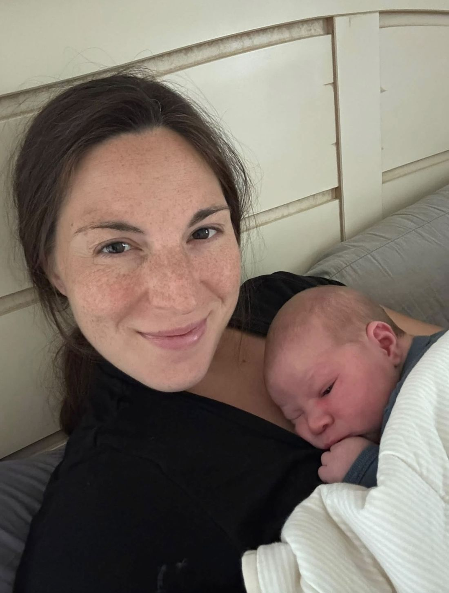
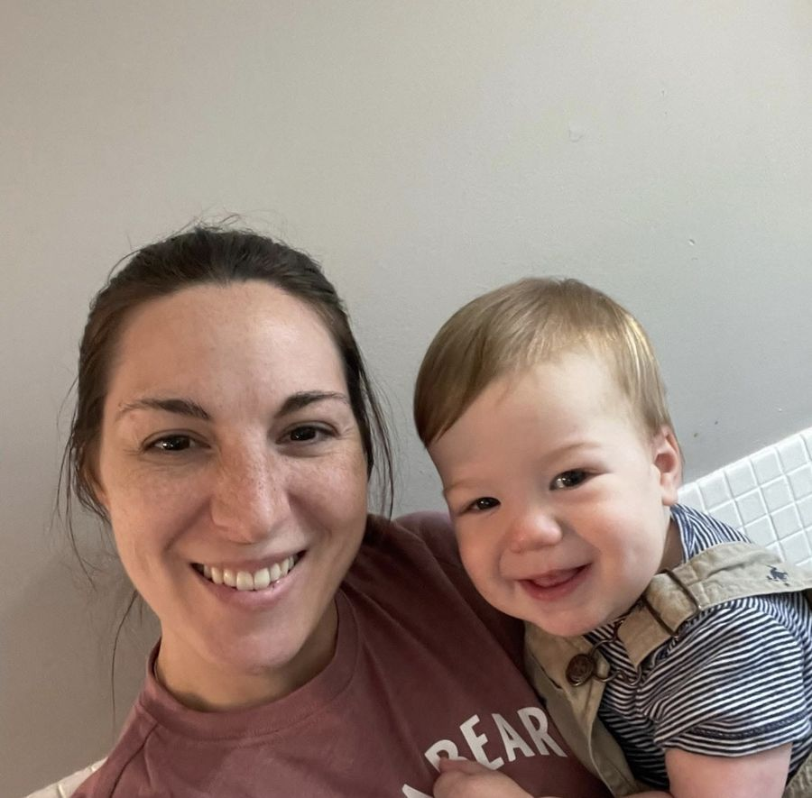

Someone who stays
Shifts change. Providers come and go. I'm with you from the time you want me there until you're settled with your baby.
Certified Birth Doula · Manchester, New Hampshire
I'm Catherine Forcier — a DONA-certified birth doula and former operating room nurse. I've had five babies of my own, all unmedicated and all with back labor, and I've supported families through birth at home, in birth centers, and in hospitals across southern New Hampshire since 2022.

Why a doula
Birth asks a lot of you. Having someone in the room who knows what's normal, who isn't watching the clock, and who is there for you and not for the chart changes how the whole day feels.
Shifts change. Providers come and go. I'm with you from the time you want me there until you're settled with your baby.
You'll know what's being offered, why, and what your options are — in plain language, in time to actually think about it. The decisions stay yours.
Counterpressure, positioning, Spinning Babies techniques, and a great deal of first-hand experience with back labor specifically.
About Catherine
I earned my Bachelor of Science in Nursing in 2014 and spent years as an operating room nurse before finding my way to birth work. That background means the hospital is familiar ground to me — I know the language, I know what a cesarean actually involves, and I'm not rattled when plans change.
But most of what I bring isn't clinical. I fell in love with birth while learning about motherhood myself, over five babies, all unmedicated, in birth centers and at home. I know what transition feels like at 3 a.m. I know what it's like to need someone to just press harder on your back and not say anything at all.

Support
Continuous support through pregnancy, labor, and the first hours after your baby arrives — prenatal visits, on-call availability, continuous labor support wherever you're giving birth, and a postpartum follow-up.
What's includedA 15-minute video chat, no cost and no pressure, so you can get a feel for whether I'm the right person for your birth. Most families talk to more than one doula — that's a good idea.
Set one upWhat to expect
A 15-minute video chat. You ask me anything; I'll ask about your due date, where you're planning to give birth, and what you're hoping for.
Prenatal visits where we talk through your preferences, your questions, comfort techniques, and what you want the people around you to know.
From a set point before your due date, my phone is on. When labor starts, you call — and I come when you want me.
Continuous support through labor and birth, then help with that first feed and those first hours before I go home. A follow-up visit afterward.
In their words
“She was a compassionate coach and thorough educator at all times. I actually LOVED labor, and I’m convinced it’s because of her!”
“We’re better off as parents, our son is better off and our birth experience was better off because we had Cat.”
“She has an incredible way about her that put me at ease, and it allowed me to stop focusing on what could go wrong and to refocus on the miracle of bringing my baby into the world.”
For partners too
Partners often arrive at birth wanting badly to help and not knowing how. I’m not there to replace them — I’m there so they can be fully present with you instead of managing logistics, watching monitors, or wondering whether what’s happening is normal.
Two of the reviews on this site were written by first-time fathers. That’s the part of this work I’m proudest of.
“Her kindness and compassion extended not only to my wife but also to me as her partner. She would check in with me and would provide guidance, support, and recommendations to me that helped immensely.”
A free 15-minute video chat, no obligation. Tell me your due date and where you're planning to give birth, and we'll go from there.